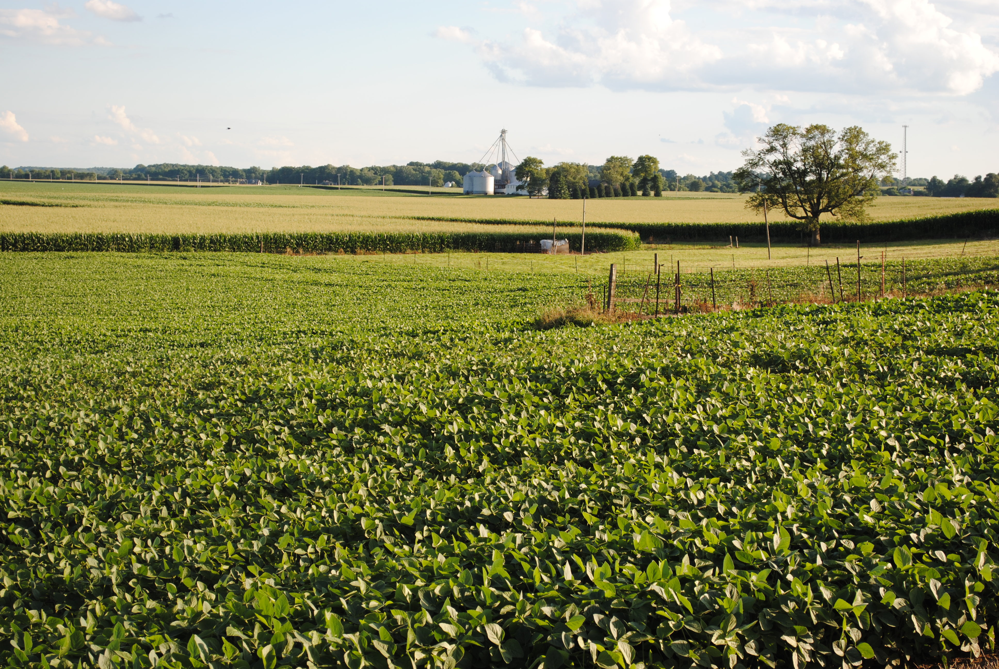
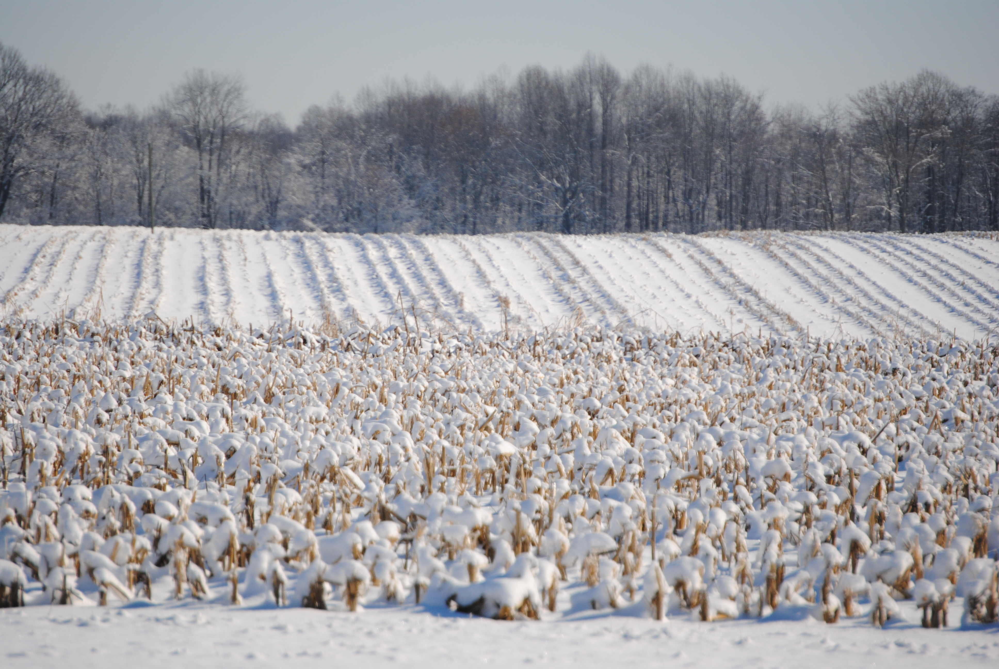
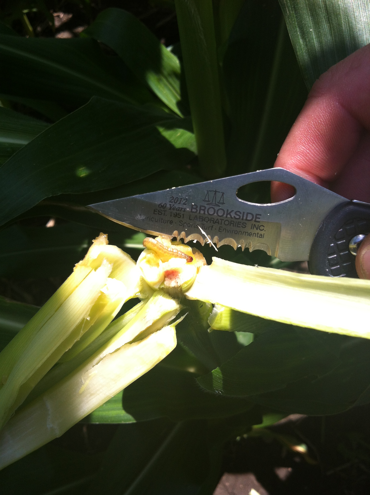
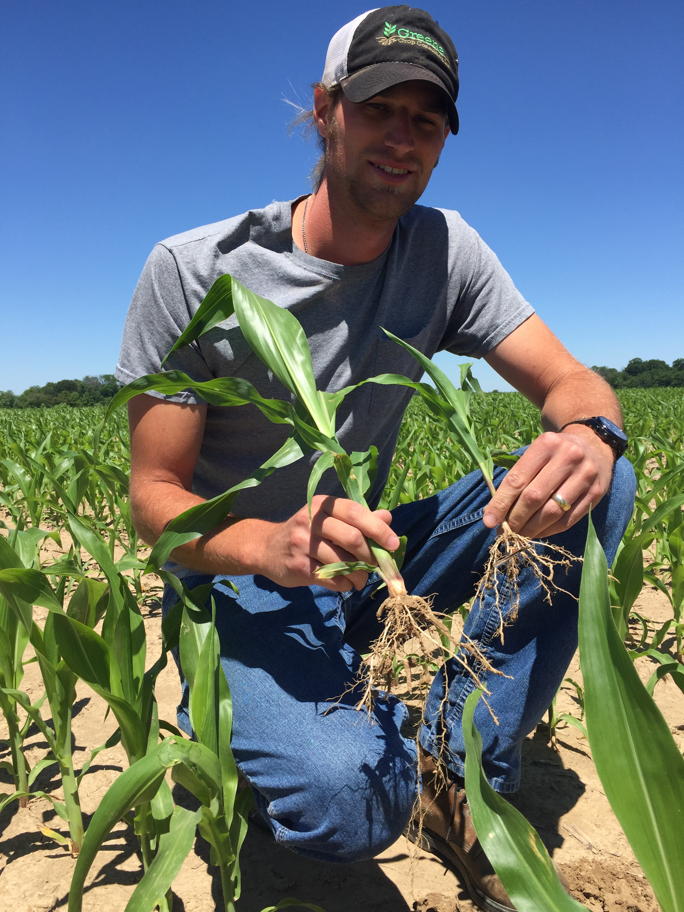
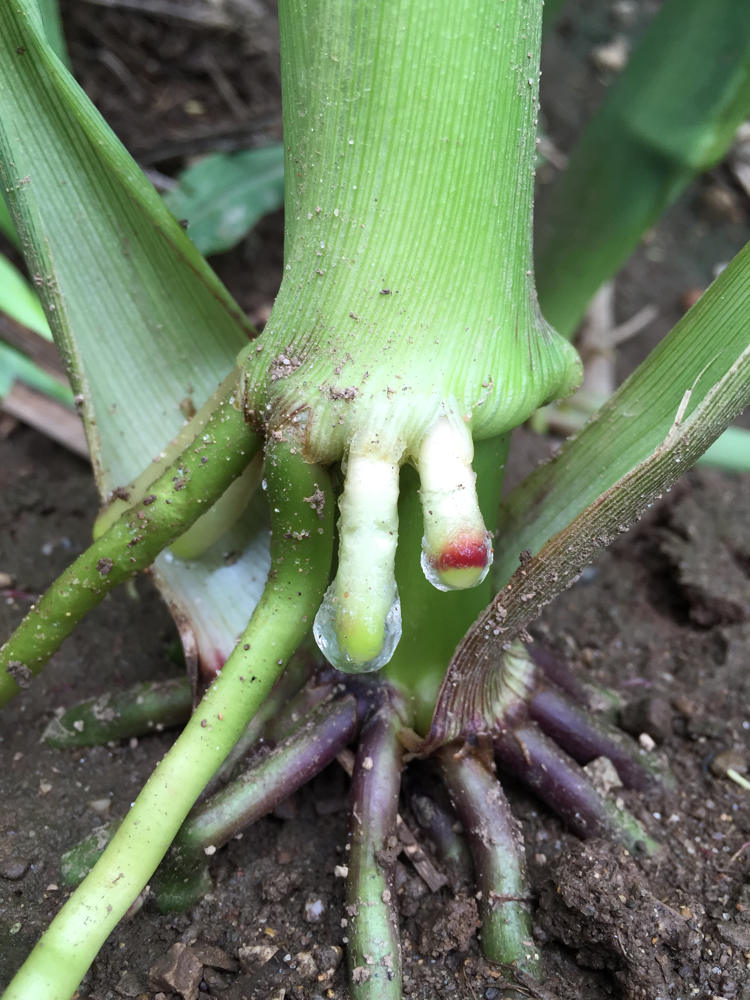

Agronomic insights, market updates, and farming tips from the Greene Crop team
The Gazette is a digital publication that discusses the crops and agriculture involved with the Greene Crop business. It features agronomic information such as crop disease, weather, and soil health, as well as other information that affects your operation.

Summer crop management tips, upcoming insurance deadlines, and our mid-season outlook for corn and soybeans in central Indiana.

Tar spot continues to be a concern for Indiana corn growers. Learn about identification, management strategies, and fungicide timing for the 2026 growing season.

Maximize your input dollars with strategic soil sampling and fertility recommendations tailored to your field's specific needs this spring.

Key deadlines are approaching. We break down Revenue Protection, Area Risk Protection, and supplemental coverage options to help you make informed decisions.

How aerial imagery and drone services are transforming field diagnostics, tile mapping, and crop health assessment for Indiana farmers.
Right source, right rate, right time, right place — our guide to the 4R framework and how it can improve both yield and environmental outcomes.
Contact us to discuss your needs